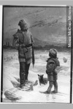

Beaubien-Perrault-Benington - Family Card
Beaubien-Perrault-Benington - Family Card
Capt. Alexander Davidson(16 Oct 1810 - 29 Jul 1886)WIlliam Mattice(15 Nov 1798 - 27 Jul 1881)
Marian Peers(abt 1813 - 13 Apr 1881)Chloe Bailey
m. 21 Sep 1868, Cornwall, Ontario

b. 17 Oct 1841, Huntingdon, Québec
d. 29 Jan 1929, New York City, NY, USA
br. 31 Jan 1929, Mount Royal Cemetery, Montréal, Québec
occ. avocat, juge, auteur
edu.
rel.
Flags.
b. 1 Apr 1844, Cornwall, Ontario
d. 16 Apr 1915, Montréal, Québec
br. 19 Apr 1915, Mount Royal Cemetery, Montréal, Québec
occ.
edu.
rel.
Flags.
Children
Lt. Col. Peers Mattice Davidson(11 Jul 1870 - 19 Jul 1920)
Charles Carlyle Monk Davidson(12 Feb 1872 - 10 Jan 1947)
Shirley Davidson(23 Sep 1874 - 8 Apr 1907)
Campbell Davidson(22 May 1877 - 16 Feb 1940)
Florence Kimball Davidson(21 Oct 1878 - 10 Jul 1879)
Thornton Davidson(17 May 1880 - 15 Apr 1912)
Alice Kathleen Davidson(7 Aug 1882 - )
Hugh Graham Davidson(26 Jul 1888 - 17 Jan 1954)